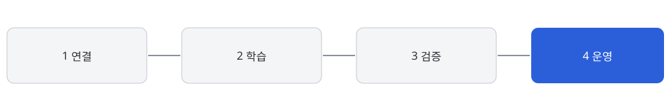

이상 징후 조기 탐지
설비별 정상 패턴을 학습해, 평소와 다른 로그가 나타나면 즉시 알립니다.
도입 6개월 후 평균, 12개 공장 기준
설비마다 다른 정상 패턴을 학습하고, 점검 판단에 필요한 근거까지 함께 보여줍니다.
설비별 정상 패턴을 학습해, 평소와 다른 로그가 나타나면 즉시 알립니다.
고장 위험도와 생산 일정을 함께 고려해 가장 영향이 적은 점검 시간을 제안합니다.
과거 고장 이력과 비교해 가능성이 높은 원인을 우선순위로 보여줍니다.

기존 설비 로그와 PLC 데이터를 읽기 전용으로 연결합니다.
최근 6개월 데이터로 설비별 정상 패턴을 학습합니다.
2주간 예측 결과를 현장 담당자와 함께 확인합니다.
이상 징후가 감지되면 담당자에게 알림과 점검 권고를 보냅니다.
“점검 일정을 감으로 잡던 것에서 데이터로 근거를 대고 잡는 것으로 바뀌었습니다.”
김지훈, 가상정밀 생산기술팀 팀장

담당자가 연락드려 현장 설비와 데이터 환경에 맞춰 데모 일정을 잡습니다.